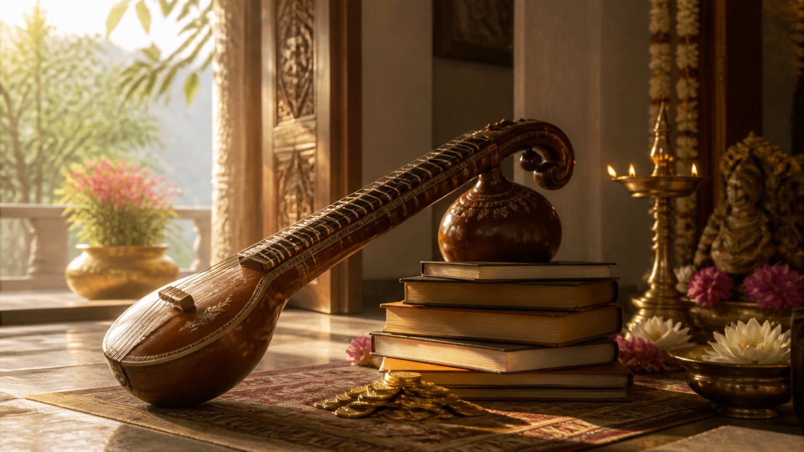
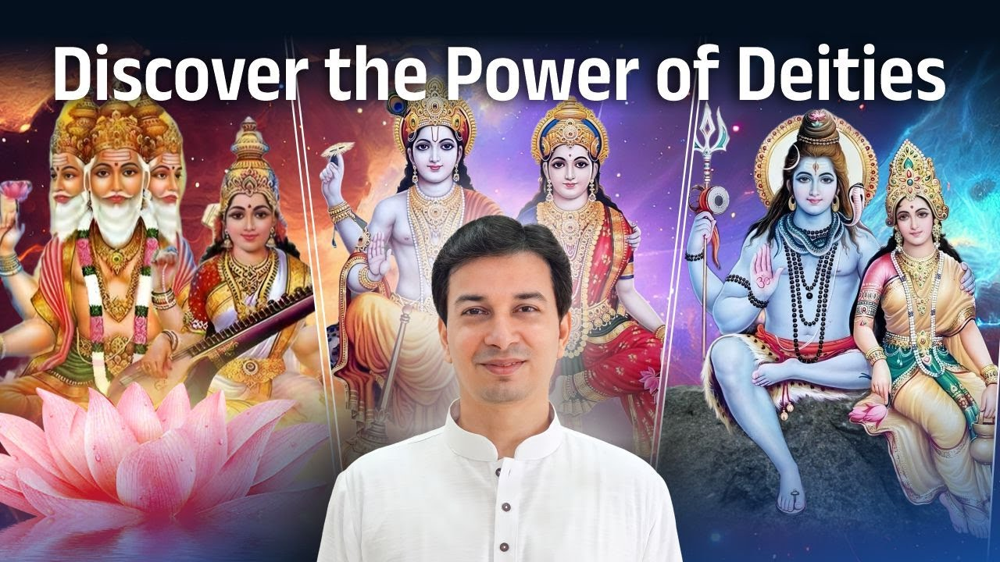

ब्रह्मा, विष्णु, महेश। सरस्वती, लक्ष्मी, काली। ये हैं त्रिदेव और त्रिदेवियाँ, जिनके नाम हम बचपन से सुनते आए हैं, कहानियों में, पूजा में, त्योहारों में।
पर क्या ये केवल कथाएँ हैं? आचार्य जी कहते हैं कि अब हम कथा-कथन से बहुत ऊपर उठ चुके हैं; कथाएँ बारह साल के बच्चों तक के लिए होती हैं। अब समय है यह समझने का कि ये देव और देवियाँ हमारे जीवन की किन शक्तियों के प्रतीक हैं।
ब्रह्मा विष्णु महेश का अर्थ क्या है? तीन जोड़ियाँ, तीन शक्तियाँ
हर देव के साथ एक देवी सदा जुड़ी रहती हैं:
- ब्रह्मा के साथ सरस्वती
- विष्णु के साथ लक्ष्मी
- महेश के साथ पार्वती या काली, इसीलिए हम कहते हैं महाकाल और महाकाली
ये तीन जोड़ियाँ जीवन की तीन अवस्थाओं को दर्शाती हैं: सृष्टि (creation), पालन (sustenance) और संहार (dissolution)।
कुछ नया शुरू करना है? ब्रह्मा को जगाइए
जब भी आपको कुछ रचना हो, कुछ उत्पन्न करना हो, कुछ निर्माण करना हो, तब ब्रह्म भाव चाहिए।
ब्रह्मा का गुण है रजोगुण (रजस, यानी गति और कर्म की शक्ति)। कुछ भी आरंभ करने के लिए कर्म करना ही पड़ता है। चाहे व्यापार शुरू करना हो या कोई नया काम। आपके जन्म के लिए भी किसी को पहल करनी पड़ी थी।
आरंभ में जो चाहिए, वह है रजस शक्ति, अर्थात् ब्रह्मा।
ज्ञान के बिना रचना? ऐसा होता ही नहीं
पर केवल कर्म पर्याप्त नहीं है। इसीलिए ब्रह्मा के साथ सरस्वती हैं। विद्या और ज्ञान के साथ की गई रचना कहीं अधिक अच्छी होती है।
आचार्य जी एक गहरी बात कहते हैं: बिना ज्ञान के कुछ भी नहीं किया जाता। अज्ञान तो बस किसी चीज़ का अभाव है, और उस अभाव को भी हम स्वयं अपने ज्ञान के रूप में चुनते हैं।
आग में हाथ डालोगे, तो हाथ जलेगा ही। तब आप यह नहीं कह सकते कि "मेरी इच्छा नहीं थी।" आपने यह ज्ञान स्वीकार किया था कि "यह कुछ नहीं करेगा", और उसी के अनुसार फल मिला।
क्या मेरी सरस्वती सही है?
यह सरस्वती चोर के पास भी है। उसके पास भी कारण है कि वह चोरी क्यों करे।
कामवासना में डूबा व्यक्ति कहता है, "विश्वामित्र थे, मेनका थीं, अप्सराएँ थीं, तो हमें क्या?" सिगरेट पीने वाला कहता है, "स्वामी समर्थ, गजानन महाराज भी तो चिलम लेते थे।" मदिरा पीने वाला कहता है, "एक लेख में लिखा है कि थोड़ी सी मदिरा दवाई जैसी अच्छी होती है।"
जैसा आचार्य जी कहते हैं, हर किसी की अपनी-अपनी सरस्वती है।
असली प्रश्न यह है कि वह सरस्वती किस स्तर की है। क्या वह अज्ञानवश अपना गढ़ा हुआ ज्ञान है, या किसी प्रामाणिक स्रोत से पुष्ट ज्ञान है? जो ज्ञान आपने लिया है, वह आगे कुछ न कुछ रचेगा ही। मदिरा पीने वाले का ज्ञान अंत में उसका यकृत (liver) खराब करेगा।
आज आप अपनी कौन सी आदत को किसी "अच्छी व्याख्या" से ढक रहे हैं? और वह व्याख्या किसके ज्ञान पर टिकी है?
लक्ष्मी से पहले सरस्वती
लक्ष्मी पूजन के दिन कितने लोग जानते हैं कि उस दिन सरस्वती का भी पूजन होता है? बहुतों को पता ही नहीं।
लक्ष्मी पूजन आरंभ करने से पहले सरस्वती पूजन होता है। किसी भी शास्त्र में, साधारण पूजा की पुस्तक में भी यह विधि मिलती है। संदेश स्पष्ट है: धन से पहले ज्ञान।
इसीलिए इस सत्र में आचार्य जी देवी भागवत पुराण के पाँच अध्याय पढ़ने की बात करते हैं, क्योंकि वह प्रामाणिक स्रोत है। उनके शब्दों में, सभी कर्म ज्ञान में समाप्त होते हैं।

जो बना है, उसे सँभालना: विष्णु और लक्ष्मी
रचना के बाद आता है पालन। जो उत्पन्न हुआ है, उसे सँभालना है, और इसके लिए चाहिए सत्वगुण (संतुलन और स्थिरता का गुण)। साथ में सदा चाहिए लक्ष्मी।
शरीर जन्मा, तो जीवन भर उसका पालन करना है। भोजन, वस्त्र, व्यायाम, औषधि, सबके लिए धन चाहिए, अर्थात् लक्ष्मी।
यहाँ एक सुंदर संयोग है। विष्णु का गुण सत्वगुण है, और लक्ष्मी का गुण रजोगुण है। यानी रचना में भी और पालन में भी, सत्वगुण और रजस शक्ति दोनों साथ काम करते हैं।
एक दिन सब छूटेगा: महाकाल और महाकाली
और अंत में, कभी न कभी त्याग करना ही होगा। या तो आप स्वयं छोड़ेंगे, या प्रकृति आपको विवश कर देगी। आचार्य जी कहते हैं कि या तो आपको संसार छोड़ना होगा, या संसार आपको छोड़ देगा।
कोई प्रियजन चला जाएगा, कोई संबंधी, या व्यापार। आप चले जाओगे, व्यापार वैसे ही रहेगा। राजा का राज्य चला जाएगा, कोई उसे जीत लेगा, या कोई नेता चुनाव हार जाएगा। एक दिन कुछ न कुछ तो छूटता ही है, और उसकी तैयारी में समय लगता है।
यह है तमस, जो स्वचालित रूप से चलता है। मृत्यु बताकर नहीं आती, जब तक कोई समाधि में न जा रहा हो। यही है काली, महाकाल और महाकाली की तमस शक्ति, जो संहार करती है।
क्या आप उस दिन की तैयारी कर रहे हैं, जब कुछ छोड़ना पड़ेगा?
मुख्य बातें
- ब्रह्मा-सरस्वती, विष्णु-लक्ष्मी और महेश-काली जीवन की तीन शक्तियाँ हैं: सृष्टि, पालन और संहार।
- कुछ भी आरंभ करने के लिए रजोगुण, अर्थात् कर्म की शक्ति चाहिए।
- रचना के साथ ज्ञान (सरस्वती) होना चाहिए; अज्ञान भी एक चुना हुआ "ज्ञान" ही है।
- हर व्यक्ति के पास अपनी सरस्वती है; देखना यह है कि वह किस स्तर की और किस स्रोत की है।
- लक्ष्मी पूजन से पहले सरस्वती पूजन होता है: धन से पहले ज्ञान।
- पालन के लिए सत्वगुण और लक्ष्मी दोनों चाहिए।
- तमस शक्ति एक दिन सब कुछ समेट लेती है; उसकी तैयारी जीवन भर करनी होती है।

आगे पढ़ें

हम सबने सुना है कि प्रकृति के तीन गुण हैं: सत्व, रज और तम। पर क्या आपने कभी रुककर सोचा है कि "गुण" शब्द का अर्थ वास्तव में क्या है?
हम अक्सर शुरुआतों को सबसे बड़ा मानते हैं: जन्म, पहला प्रेम, नया व्यापार। पर आचार्य उपेंद्र जी एक सरल सा प्रश्न पूछते हैं: वह शुरुआत कितनी देर की थी?…

बचपन में घर में गणपति अथर्वशीर्ष का पाठ होता था। एक बालक बार-बार पूछता था: यह गणेश विद्या क्या है? गणेशजी को हाथी की सूँड क्यों? हम घंटी बजाते हैं,…